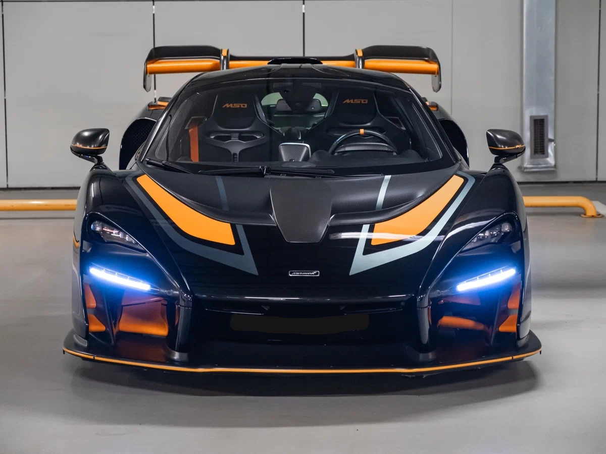
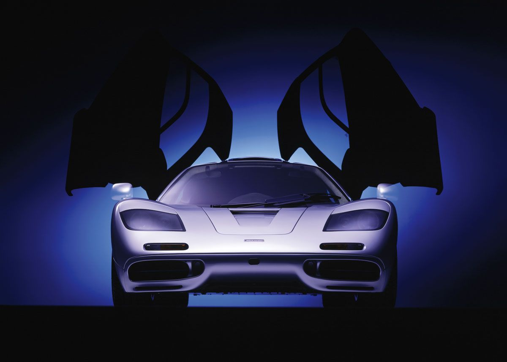
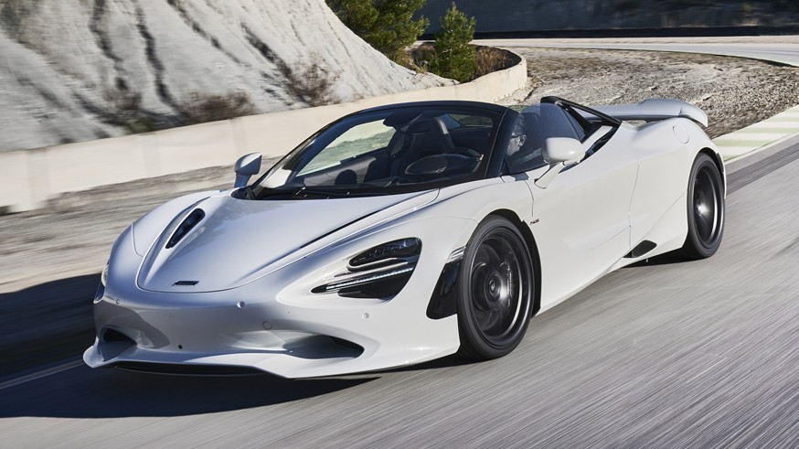

Автомобили McLaren
Каждый дорожный McLaren собирают вручную в Великобритании, а кузова делают из углеволокна — по той же технологии, что и болиды Формулы-1. Нажми на карточку, чтобы узнать больше о модели.
Каждый дорожный McLaren собирают вручную в Великобритании, а кузова делают из углеволокна — по той же технологии, что и болиды Формулы-1. Нажми на карточку, чтобы узнать больше о модели.

Суперкар с двигателем 4.0 V8. Разгон до 100 км/ч — 2,9 секунды.

Гибридный суперкар: бензиновый V6 плюс электромотор.

Легендарный гиперкар 2013 года, выпущен всего 375 экземпляров.

Создан в честь Айртона Сенны. Всего 500 машин, построен для трека.

Легенда 1992 года: 387 км/ч, место водителя по центру салона.

Флагман линейки: 750 л.с., разгон до 100 км/ч за 2,8 секунды.